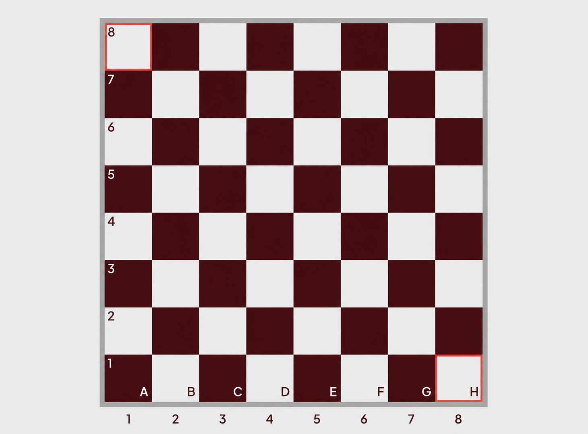

Вопрос
Ответ
Чтобы не зубрить все 64 поля, присвоим буквам цифры: a=1, b=2, c=3, d=4, e=5, f=6, g=7, h=8
Узнаём цвет клетки: складываем номер буквы и номер горизонтали
Если сумма ЧЕТНАЯ — поле чёрное
Если сумма НЕЧЕТНАЯ — поле белое
Одинаковая чётность – чёрное поле
Буквы a, c, e, g считаем нечётными, b, d, f, h — чётными. Если буква и цифра одной чётности, поле чёрное, а разной — белое
